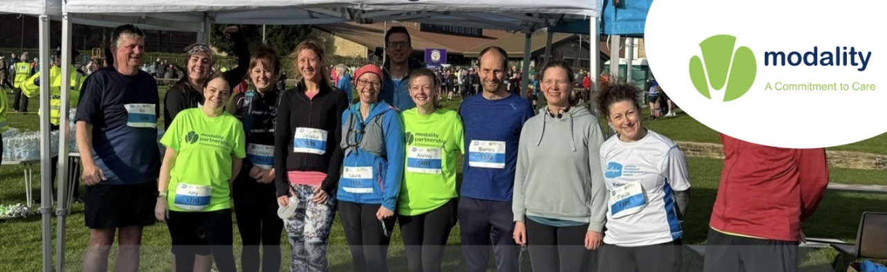
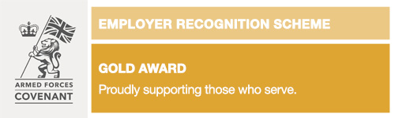

Modality AWC brings together eleven family practices across Airedale, Wharfedale and Craven — delivering NHS general practice with the warmth of a village surgery and the depth of a modern partnership.

Six essentials for managing your care — designed to keep phone lines open for the people who need them most.
Same-day triage, routine reviews, and extended-hours slots across all practices.
Request your regular medication through the NHS App or your practice portal.
New to the area? Join one of our eleven family practices in minutes.
Request a certificate for work or study without taking up an appointment.
Access your results securely through the NHS App the moment they're available.
Every digital tool we offer — from online consultations to health records.
Our online consultation platforms route your request to the right clinician — so you get help faster and our reception team can focus on the people who can't use digital tools.
Our fast-track online consultation service. Tell us what's wrong and we'll respond — usually within the same working day.
Start a consultation →Detailed online triage for non-urgent health concerns. Open Monday to Friday.
Open Patchs →Receive secure messages and video appointments directly from your GP team.
Visit Accurx →AI-powered triage that routes your request to the most appropriate clinician.
Open Klinik →Online services for practices using TPP SystmOne — bookings, records, messages.
Open SystmConnect →Comprehensive patient engagement platform connecting you with your care team.
Open Engage →From Gargrave to Oakworth, each surgery has its own character — but all share the same clinical systems, extended-hours access, and commitment to the people of Yorkshire.
We've partnered with GOQii — a leading preventive healthcare company — to offer you a free personalised health coaching service on your mobile or tablet.
Your certified coach will guide you through nutrition, exercise and lifestyle changes to support and improve your overall well-being — not just treating illness, but building health.
Learn about GOQii →Research we're part of, community initiatives we support, and notices you should know about.
Our GP practice is taking part in a research study called CAPTURED, which aims to help improve patient care across primary care in the UK.
Read update →Free support sessions to help you access the NHS App, book online appointments, and manage your prescriptions from your phone.
Read update →Looking for a reason to lace up your trainers and challenge yourself this year? The Keighley 10K is back — and we're behind every runner.
Read update →The Modality AWC Patient Panel brings together representatives from all eleven practices within the partnership. We meet every six months to discuss patient experience, share ideas, and drive genuine improvements.
If you've got a view on how we can do better, we'd love to hear it.
Join the Patient Panel →A Patient Participation Group is made up of patients who work alongside a GP practice to help improve how services are delivered — your voice shapes our care.— The Modality AWC Patient Panel
Call NHS 111 when you need medical help fast but it's not an emergency — or when your practice is closed. Free from landlines and mobiles, available 24 hours a day, 365 days a year.
Call 999 for chest pain, severe breathlessness, heavy bleeding, stroke symptoms, loss of consciousness, or serious injury — any situation where every second matters.
